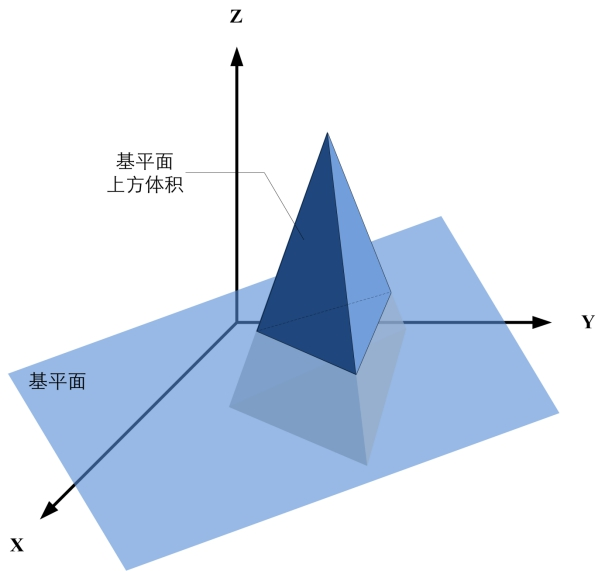
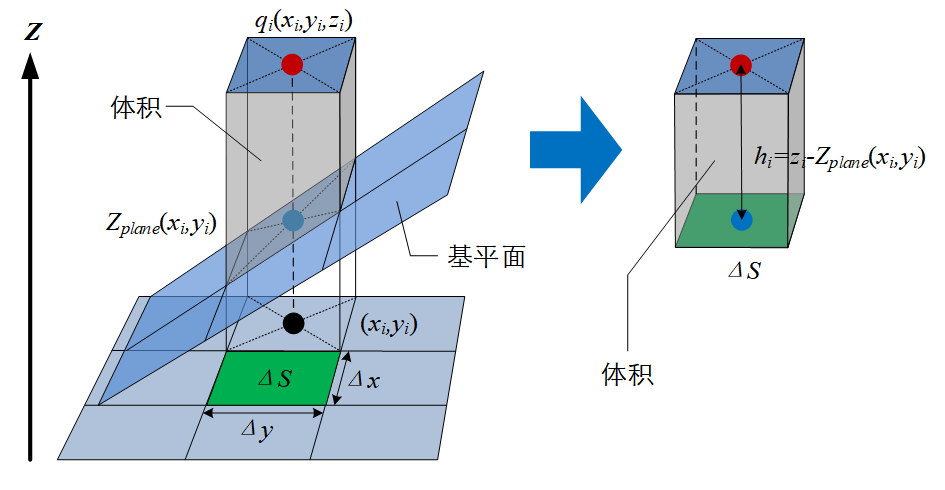
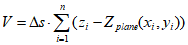
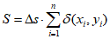
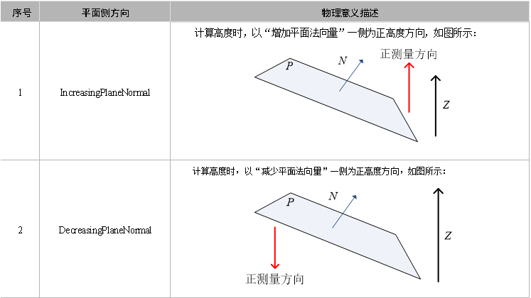

在3D测量中，体积测量工具主要是获取深度图像中检测区域内三维空间点构成的物体，在指定基平面上方的体积、在XOY面的投影面积和垂直高度。如图1所示为一个三棱锥物体在基平面上方的体积。

| 分类 | 参数名称 | 参数描述 |
|---|---|---|
| 属性窗口 | 平面方向 | 分为两种：增加法向量一侧为正高度方向和减少法向量一侧为正高度方向。 |
| ROI类型 | 待检测区域，分为8种：整幅图像、矩形、仿射矩形、圆形、圆环、椭圆、多边形、多仿射矩形。 | |
| 最小高度阈值 | 根据最小高度阈值对计算得到的测量数据进行过滤。 | |
| 启用垂直高度计算 | 选择“是”，则计算垂直高度。 | |
| 计算高度中值 | 选择“是”，则计算高度中值。 | |
| 启用掩膜 | 是否启用掩膜，选择“是”，显示掩膜个数、掩膜序号、掩膜形状等参数。 | |
| 掩膜个数 | 设置启用的掩膜个数，取值范围为 [1, 99]。 | |
| 掩膜序号 | 当前欲设置的掩膜索引。 | |
| 掩膜类型 | 当前欲设置的掩膜形状，分为6种：矩形、仿射矩形、圆形、圆环、椭圆、多边形。 | |
| 体积上限 | 取值范围为[0, 100000]，且下限应小于等于上限。 | |
| 体积下限 | 取值范围为[0, 100000]，且下限应小于等于上限。 | |
| 面积上限 | 取值范围为[0, 100000]，且下限应小于等于上限。 | |
| 面积下限 | 取值范围为[0, 100000]，且下限应小于等于上限。 | |
| 高度最大值上限 | 取值范围为[-100, 100]，且下限应小于等于上限。 | |
| 高度最大值下限 | 取值范围为[-100, 100]，且下限应小于等于上限。 | |
| 高度最小值上限 | 取值范围为[-100, 100]，且下限应小于等于上限。 | |
| 高度最小值下限 | 取值范围为[-100, 100]，且下限应小于等于上限。 | |
| 高度均值上限 | 取值范围为[-100, 100]，且下限应小于等于上限。 | |
| 高度均值下限 | 取值范围为[-100, 100]，且下限应小于等于上限。 | |
| 高度中值上限 | 取值范围为[-100, 100]，且下限应小于等于上限。 | |
| 高度中值下限 | 取值范围为[-100, 100]，且下限应小于等于上限。 | |
| 图像窗口 | 深度图像 | 显示待检测的深度图像，显示为伪彩色图像。 |
| 检测区域 | 在图像上显示待检测区域。 | |
| 掩膜区域 | 在图像上显示待掩膜区域。 | |
| 数据链 | 深度图像 | 输入待检测的深度图像。 |
| 基平面 | 选择高度测量的基准平面。 | |
| 二维线性变换 | 目标相对于模板的平移、旋转、缩放变换。 | |
| 高级界面 | 无 | 无 |
| 分类 | 参数名称 | 参数描述 |
|---|---|---|
| 监视窗口 | 深度图像 | 深度图像的长宽和像素大小，以及深度数据参数。 |
| 体积 | 测量物体在指定基平面上的体积，单位：mm3。 |
|
| 面积 | XOY面的投影面积，单位：mm2。 | |
| 高度均值 | 高度数据的平均高度值。 | |
| 高度中值 | 将高度数据排序后，位于中间位置的高度数据。 | |
| 高度最小值 | 高度数据中最小高度数值。 | |
| 高度最大值 | 高度数据中最大高度数值。 | |
| 高度质心 | 测量物体质心的高度值。 | |
| 区域边界框内像素数目 | 检测区域的最小外接矩形内像素（包含无效像素）的数目。 | |
| 关注像素数目 | 检测区域形状内像素（包含无效像素）的数目。 | |
| 可见关注像素数目 | 检测区域形状内有效像素的数目。 | |
| 所用像素数目 | 检测区域内实际用于高度测量的像素数目。 | |
| 执行结果 | 工具执行结果。 | |
| 执行时间 | 工具执行时间。 | |
| 图像窗口 | 输出图像 | 显示检测的深度图像，显示为伪彩色图像。 |
| 数据链 | 同监视窗口参数，供后续工具使用。 |
体积测量主要是根据三维数据点到指定基平面在相同二维坐标下的Z值差的累积和，以及深度图像像素表示的实际物理面积计算得到体积，主要是计算三维点到平面的Z值差，如图2所示。

设给定基平面为aX+bY+cZ+d=0，三维数据点为qi(xi,yi,zi), i = 1,2,…,n，一个深度图像像素表示的物理面积为△s=△x△y，其中，△x是像素x坐标的物理当量，△y是像素y坐标的物理当量，则检测区域内三维点所构成的物体到基平面之上的体积V为：

其中，Zplane(xi,yi)表示三维点qi在基平面aX+bY+cZ+d=0上的Z值。
由公式可知，所测量的体积是三维点的z坐标值与其对应在基平面上的ZPlane的差值累积和，与像素表示的物理面积之乘积。显然，三维点在平面上方对应的差值为正，在平面下方差值为负。
面积如图3所示，其计算公式为：

其中，δ(x,y)表示坐标(x,y)上的深度值是否符合要求，若符合其值为1，否则为0。
Step 1 设置平面侧方向
执行体积计算时，需要确定测量的方向；平面侧方向共包含2种：IncreasingPlaneNormal和DecreasingPlaneNormal，其具体物理含义如下表所示。两种平面侧方向得到的测量数值是互为相反数的，因此，最终计算得到的体积也就不同。

Step 2 设置检测区域及掩膜
为了获取三维空间点数据需要设置检测区域及掩膜，其中，检测区域形状支持圆、椭圆、多边形、矩形、仿射矩形或圆环段等六种设置，掩膜支持一定数量（1~99）的圆、椭圆、多边形、矩形、仿射矩形和圆环段等六种区域设置；此时，体积测量使用的是检测区域形状内除去掩膜区域的三维空间点数据。
Step 3 设置直方图统计
设置测量参数主要是设置最小高度阈值参数，是根据该阈值对计算得到的测量数据进行过滤，以得到更加精确的体积。
Step 4 执行测量与输出结果
获取三维空间点数据后，执行测量就可以得到所测量物体的体积，并输出体积、面积、高度以及像素计数等结果。
参见“\Samples\3D\深度图\3D测量工具.gvp”。